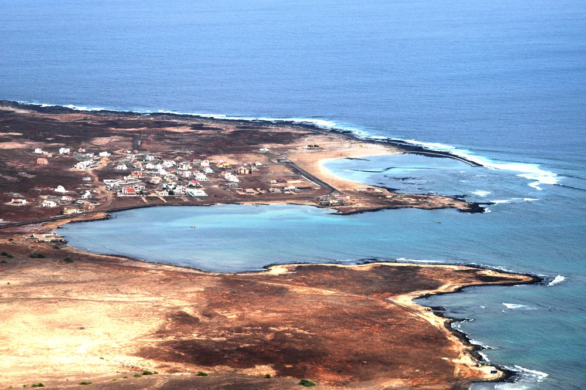

Baía das Gatas — São Vicente
São Vicente, Cap-Vert · kitesurf, baignade

Baie de São Vicente, à 15 km à l’est de Mindelo, que Wikivoyage décrit comme une immense piscine naturelle. Selon IKSurfmag, c’est le seul plan d’eau plat permanent du Cap-Vert, avec de l’eau à hauteur de genou à la taille ; il est minuscule : deux kites suffisent à le remplir. Le festival de musique de la Baía das Gatas a lieu chaque année début août, à la pleine lune.
- Lieu
- São Vicente, Cap-Vert
- Niveau
- Variable selon les conditions
- Activités
- kitesurf, baignade
- Type d'eau
- Mer / océan
- Coordonnées
- 16.90, -24.91 (position approximative du secteur)
Dangers à connaître
- À l’ouest de la baie, on marche sur des pierres irrégulières et souvent instables (Wikivoyage).
- Dans les piscines naturelles de l’ouest, la mer se brise en gerbes qui peuvent dépasser 5 m (Wikivoyage) : garde tes distances.
- Les alizés soufflent régulièrement à plus de 25 nœuds à São Vicente (IKSurfmag) : choisis ton matériel en conséquence.
Le conseil d'Ocean Buddy
Pour le kite, prévois peu de place sur l’eau. Si tu vas voir les vagues à l’ouest de la baie, prends une veste coupe-vent et de bonnes chaussures de marche.
Ouvrir dans Ocean Buddy Télécharger sur l'App Store
Source : Fiche Ocean Buddy · décembre 2026 · d’après IKSurfmag et Wikivoyage · à vérifier localement.